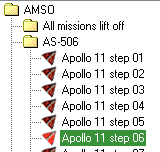
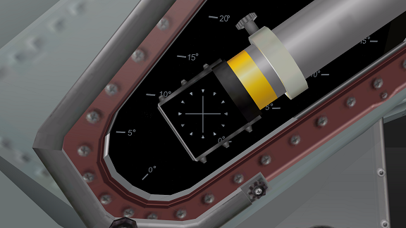
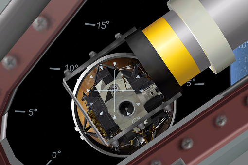
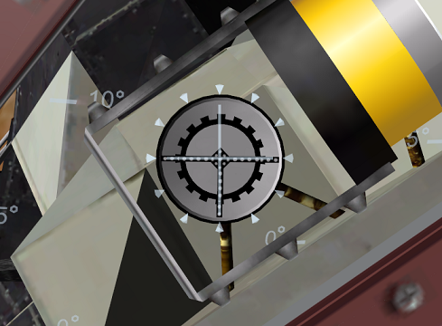
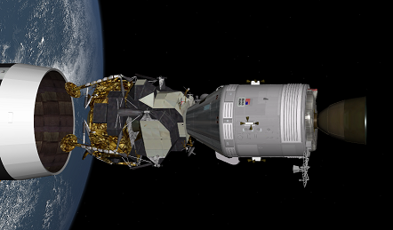
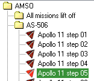
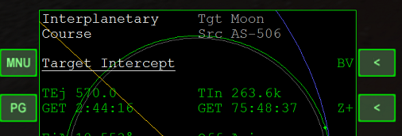
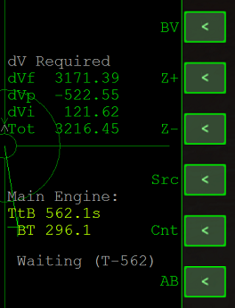

AMSO ドッキングとTLI
ドッキング
ここではApollo 11 step 06のシナリオを使用します。

Jを押して、CSM（司令･機械船）をロケットから分離する。
F1を押して船内視点に、F8を押してコクピット視点にする。
Ctrl + Alt + 矢印キーの同時押しでカメラを左上に移動させる。
Ctrl + Zの同時押しでFOVを変更する。（Ctrl + Xで戻す）

RCS ROTで真後ろを向く。（TABキーで左上にRCSの表示が出るので確認する）
LM（月着陸船）が見えたら回転を止める。
船体をロールさせて（テンキーの6）、ドッキング用の目印に十字線を合わせる。

RCS LINを使ってLMに接近する。
上下左右に移動して、ドッキング用の目印の赤い部分が見えないようにする。

そのまま前進すれば、自動的にドッキングされる。
ドッキングが完了したら、Jを押してLMを分離する。

TLI
TLI（Trans-lunar injection）とは、地球軌道から月へ向けてエンジンを噴射することです。
この噴射にはIMFDというMODを使用します。※
※IMFDではなくLTMFDを使用することもできます。
LTMFDを使用する場合、自分で到着時刻などを入力する必要があります。
IMFDのダウンロード+インストール
以下の記事を参照してください。
IMFDのインストールと設定
TLIの実行
ここでは、Apollo 11 step 05というシナリオを使用します。

ゲームを開始したら、左MFDでPGをクリック。
BVをクリック。

ABをクリックすると、噴射へのカウントダウンが開始する。
IMFDが自動で宇宙船の向きを変えて、エンジンを噴射するので待つ。
